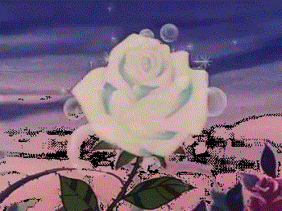

Roses
Roses are red
,violets are blue
,this has always been a short and deep poem, with a lot versions, i come here to showcase how beautiful they are because i was bored
Starting with the white one that gives a great smell and beauty, it symbolizes the inocent and pure beauty of roses,commonly used in weddings and funerals aswell.And,interesting fact, in England it is a symbol of the York House
